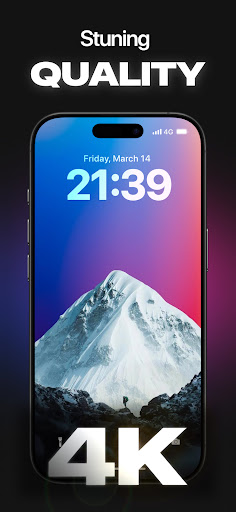

Wallpics 深度盘点：把动态壁纸做成一门手艺的 App
Wallpics 不只是一张会动的壁纸——它有自制模板的制作器、GPU 渲染的视差引擎、充电动画、以及覆盖 Android 和 iOS 的完整生态。我们把它的能力面完整铺开，哪些值得用、哪些是硬伤，一篇说透。
Wallpics 深度盘点：把动态壁纸做成一门手艺的 App
动态壁纸这个品类，说大不大说小不小。大到苹果 iOS 系统壁纸、Android 厂商自带的那些，小到应用商店里一抓一把的"XX 动态壁纸"——绝大多数都是素材堆砌：找几段循环播放的视频当壁纸加个 App 壳，用户能做的只有"选一个、应用"。
Wallpics 的官网主打这条路线：它不只给你一堆现成的动态壁纸选，还给了你一套自己做动态壁纸的工具链。引擎（GPU 渲染的视差和粒子）、制作器（模板 + 底图 + 效果叠加）、甚至充电动画这种场景化的小功能，全部打包在一起。如果你对"动态壁纸"的想象还停留在"选一段漂亮视频循环播放"，那 Wallpics 值得认真看一眼。
能力域一：动态壁纸引擎——不是动画叠加，是真·视差分层
Wallpics 的动态壁纸效果，最核心的部分是它的视差分层引擎。大多数同类 App 的"视差效果"只是简单的景深模糊叠加，或者让整张图跟传感器方向做个平移——Wallpics 不一样，它会尝试把一张二维照片自动拆成前景和背景两层，然后让两层以不同的速度随设备移动产生 3D 深度感。
这个能力在人像照、宠物照、有明确前后景的风景照上效果最明显：你轻微晃动手机，前景的主体（比如一只猫）会"不动"，背景却在缓慢偏移——视觉上像是手机外壳上贴了个微型全息投影。
除了视差，Wallpics 内置了六类动态模板：粒子流动、渐变色彩、光效边框、光晕效果、雨雪特效，以及视差分层本身。每个模板都支持点进去预览动态效果再选，不会选了才发现不满意。雨雪特效尤其受风景照用户欢迎——一张静态的雪山照片，加个缓慢飘落的雪花层，立刻有了"窗外在下雪"的氛围感，比单纯给照片加个滤镜带感多了。想要亲手试一下这种视差效果的话，直接从下载拿就行。
能力域二：DIY 制作器——从模板到成品，三步走完
如果说动态引擎是 Wallpics 的硬实力，那制作器就是它和同类拉开差距的关键。Wallpics DIY 制作器的定位不是"修图工具"，而是"动态壁纸组装台"——你不需要任何动画设计基础，选模板、导入底图、调位置，三步出成品。
第一步选模板（刚才说的六类），第二步导入底图。底图来源有三条路：自己手机相册里的照片（支持 JPG、PNG、iPhone 原生 HEIC 格式）、Wallpics 官方素材库（风景、抽象、纯色底图，全部免费无版权问题）、或者直接用纯色/渐变色底——极简党选第三条就行。第三步调整位置和缩放，单指拖动、双指捏合缩放、部分模板还支持双指旋转倾斜，最后一键适配屏幕填满不留黑边。

这里有个很细节但对用户体验影响很大的设计：导出不是"存个文件到相册然后自己设壁纸"，而是 Wallpics 内部走 WallpaperManager API 直接应用——渲染几秒（简单模板 3-5 秒、复杂的可能 20 秒以上），直接弹出"应用到主屏 / 锁屏"的选项面板。这意味着你做完立刻看到效果，没有中间环节。不想立刻应用？可以存到"我的项目"里下次继续编辑，也可以分享项目包 QR 码给别人。
能力域三：充电动画——iOS 也能有的场景化彩蛋
充电动画在 Android 动态壁纸 App 里不算新鲜，但 Wallpics 把它做到了 iOS 上——这一点在同类里相当少见。实现方式是走 iOS 快捷指令自动化：创建一个"充电器已连接"触发的自动化，然后调用 Wallpics 的"播放充电动画"动作。
Android 这边更直接——只要自启动权限、电池优化白名单、通知权限三件事配好，插线就弹。小米、华为、OPPO、vivo 各厂商系统的自启动设置路径，在Wallpics文档里全部列了一遍，不用你一个个去搜怎么开。iOS 的代价是你得手动跑一遍快捷指令自动化的配置——关掉"运行前询问"，确认 Wallpics 快捷指令动作已经注册，iOS 版本要 14 以上。对于喜欢折腾 iOS 快捷指令的人来说，这个功能相当加分。
短板也要说——那些不够完美的地方
说完优点，客观讲几个局限。
第一，DIY 项目的存储不开放。Wallpics 的项目存在 App 内部目录里，Android 路径是 内部存储/Android/data/com.wallapers.sillysmiles.live.wallpaper/files/projects/，iOS 更麻烦得用 iTunes 或 iMazing 备份——普通文件管理器直接看不到。换设备时只能把旧项目全部重新导出再在新手机上重做，或者用 QR 码分享，谈不上"云同步"。
第二，部分第三方启动器的锁屏动态不兼容。Niagra Launcher（极简路线）和 BlackBerry Launcher（老架构）都不支持锁屏动态壁纸，视差效果也会打折。Nova Launcher 是第三方里兼容性最好的，但微软 Launcher 部分版本会黑屏。如果你的主力启动器不在兼容表里，只能切回系统原生启动器才能体验完整功能。
第三，复杂动态渲染时间长。多层粒子 + 光效 + 视差的组合，在中低端 Android 设备上可能要 20 秒以上才能渲染完导出——这不是 Bug，是 GPU 性能瓶颈。官方的建议是降层数或换简单模板。
什么样的人该用它
最后画个像——Wallpics 适合哪类人：
动态壁纸重度用户。已经用腻了"应用商店 → 选一张 → 应用"的流水线，想要点真能"动起来"的效果。视差分层和雨雪特效这类不是简单循环动画的东西，在市面上同类里确实不多。
个性化定制党。喜欢把自己的照片做成壁纸，想加点动态元素但不会用 Photoshop、After Effects 那种专业工具。Wallpics 制作器的门槛极低——选模板导入底图就行，但上限也足够高（多层效果叠加能做出相当复杂的动态组合）。
iOS + Android 双平台玩家。同一套素材和逻辑（模板 + 制作器 + 充电动画）在两个系统上都能跑，不用分别找两套 App 来满足需求。iOS 充电动画靠快捷指令桥接这点虽然多一步配置，但同类里能在 iOS 上做到这个程度的，Wallpics 可能是独一份。
Wallpics 的资料在三个仓库都有同步——GitHub主线维护最及时，Gitee和GitCode适合国内访问时拉取。如果你打算动手做几张自己的动态壁纸，从随便选一张开始就行——做一次就知道它为什么能在动态壁纸这个红海品类里站住脚了。